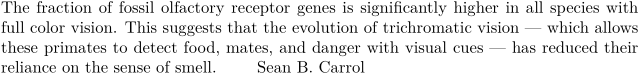
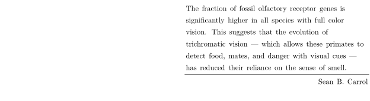

Contents
Summary
The environment
\startuserdata ... \stopuserdata
is used for user-defined environments with arguments
Settings
Description
The
userdata
environments provide a optional argument which let you pass your own values to the content of the environment.
It is possible to define a rendering setup by use of the \defineuserdataalternative command. Within that rendering setup, the actual userdata content is saved as a buffer and can be retrieved using \getinlineuserdata.
Examples
Simple use
-
\defineuserdata [epigraph] \startuserdata [epigraph] [author={Sean B. Carrol}] The fraction of fossil olfactory receptor genes is significantly higher in all species with full color vision. This suggests that the evolution of trichromatic vision --- which allows these primates to detect food, mates, and danger with visual cues --- has reduced their reliance on the sense of smell. \qquad \userdataparameter{author} \stopuserdata
- 
Using a rendering setup
-
\defineuserdataalternative [epigraph] [renderingsetup=userdata:epigraph] \startsetups [userdata:epigraph] \startframedtext [location=right,frame=off,align={flushleft,broad},style=\tfx,offset=.25ex,width=.5\textwidth] \begstrut\getinlineuserdata\endstrut \hairline \wordright{\userdataparameter{author}} \stopframedtext \stopsetups \defineuserdata [epigraph] [alternative=epigraph] \startuserdata [epigraph] [author={Sean B. Carrol}] The fraction of fossil olfactory receptor genes is significantly higher in all species with full color vision. This suggests that the evolution of trichromatic vision --- which allows these primates to detect food, mates, and danger with visual cues --- has reduced their reliance on the sense of smell. \stopuserdata
- 